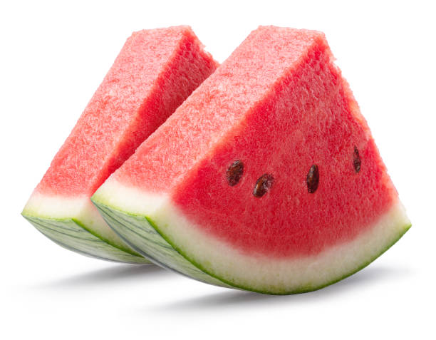

Freshness You Can Trust

Watermelon is a refreshing and juicy fruit that is rich in water, vitamins A and C, and antioxidants. It helps keep the body hydrated, supports healthy skin, improves digestion, and is a perfect fruit during hot summer days. Watermelon is naturally sweet, low in calories, and enjoyed by people of all ages.